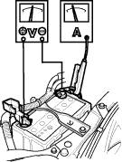
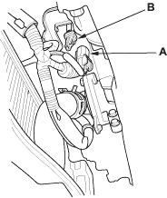

NOTE:
- Air temperature must be between 15° and 38°C (59° and 100°F) during this procedure.
- After this test, or any subsequent repair, reset the Engine Control Module (ECM) to clear any Diagnostic Trouble Codes (DTC's) (see page 11-4).
Recommended Procedure:
- Use a starter system tester.
- Connect and operate the equipment in accordance with the manufacturer's instructions.
Alternate Procedure
- Hook up the following equipment:
- Ammeter, 0-400 A
- Voltmeter, 0-20 V (accurate within 0.1 volt)
- Tachometer, 0-1200 rpm

- Remove the No. 17 (15A) fuse from the under-dash fuse/relay box.
- Turn the ignition switch to start (III).
Did the starter crank the engine normally?
YES - The starting system is OK. 
NO - If starter will not crank the engine at all, go to step 4. If it cranks the engine erratically or too slowly, go to step 7. If it will not disengage from the flywheel ring gear when you release the key, check for the following until you find the cause.
- Solenoid plunger and switch malfunction
- Dirty drive gear or damaged overrunning clutch
- Check the battery condition. Check electrical connections at the battery and the starter for looseness and corrosion. Then try starting the engine again.
Did the starter crank the engine?
YES - The starting system is OK.
NO - Go to step 5.
- Make sure the transmission is in neutral, then disconnect the starter sub-harness 1P connector (A) from the engine wire harness 1P connector (B). Connect a jumper wire from the battery positive terminal to the starter sub-harness 1P connector.

Did the starter crank the engine?
YES - Go to step 6.
NO - Check the BLK/WHT wire between the starter sub-harness 1P connector and the starter. If wire is OK, remove the starter and diagnose its internal problems.